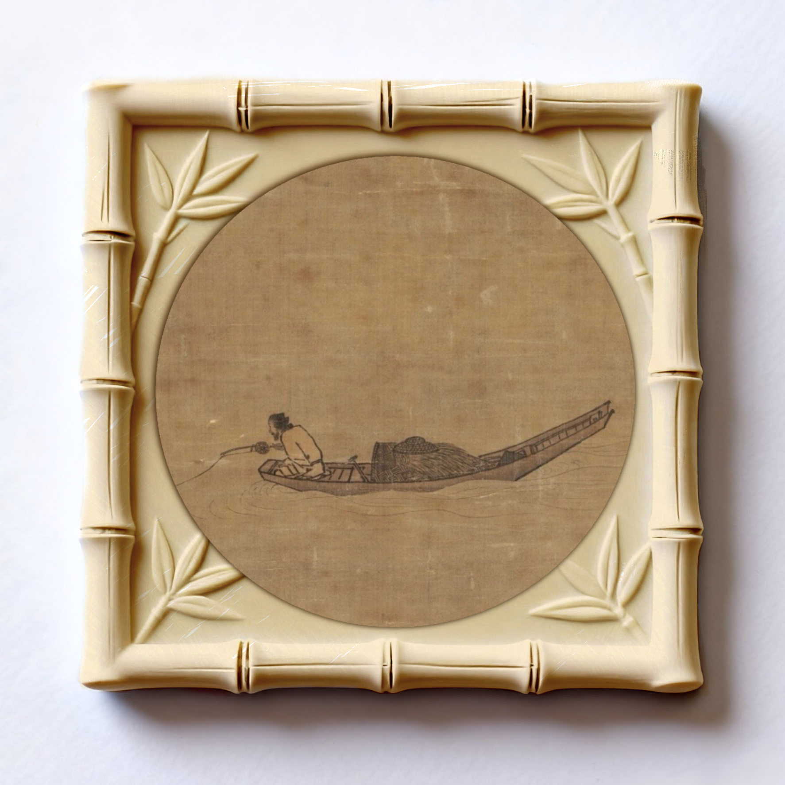
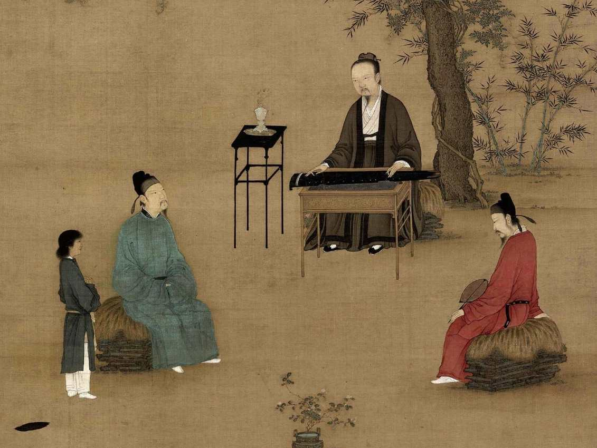
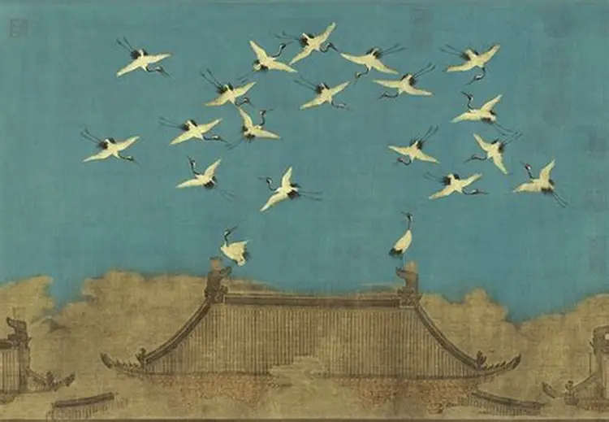
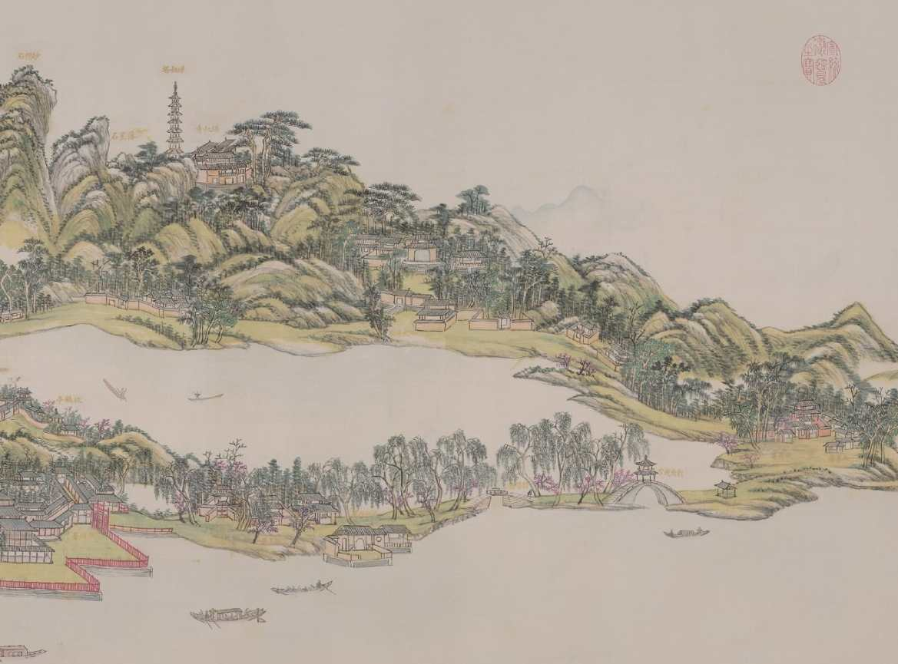
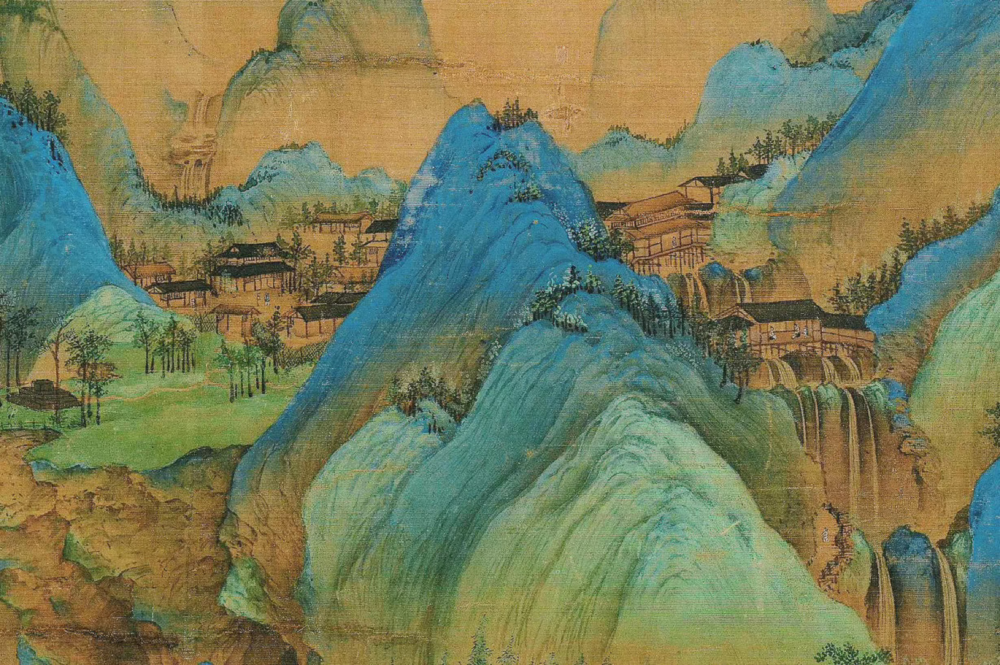
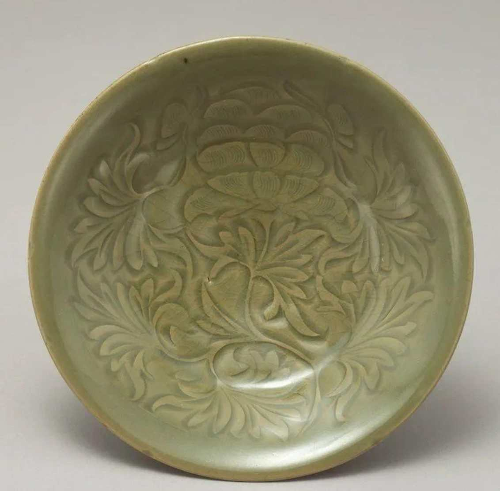
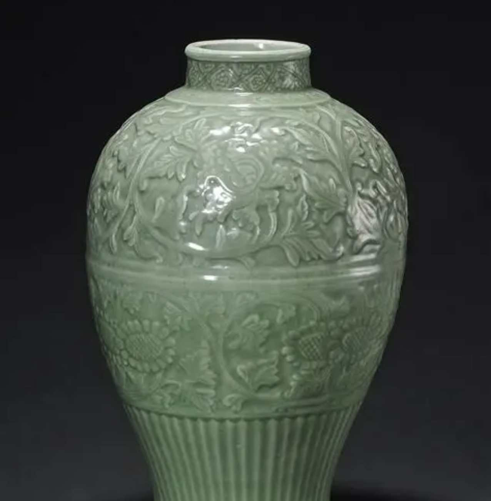
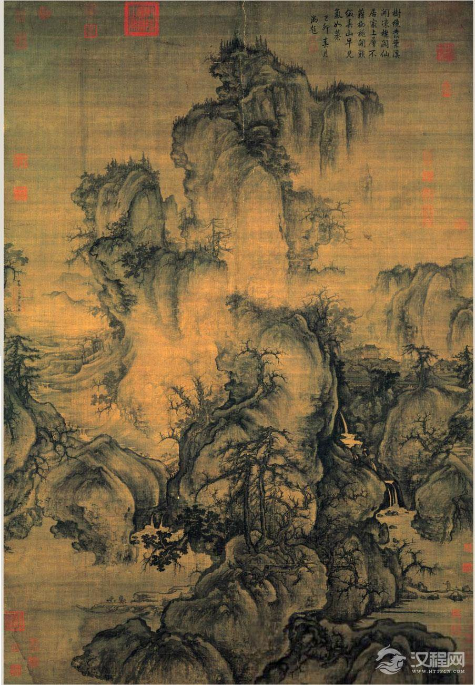
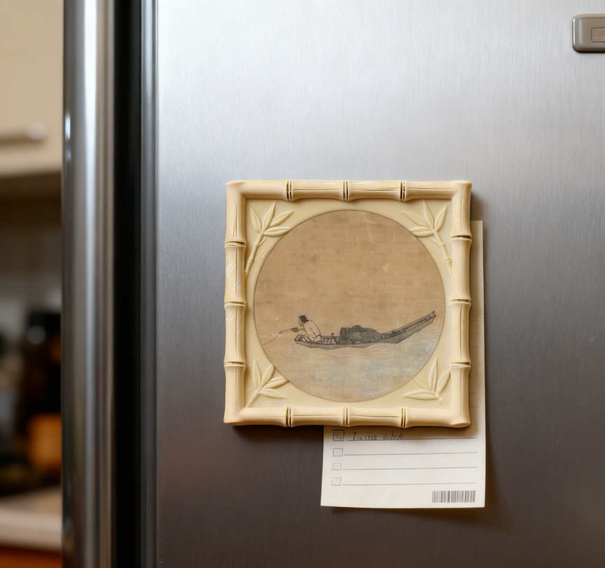
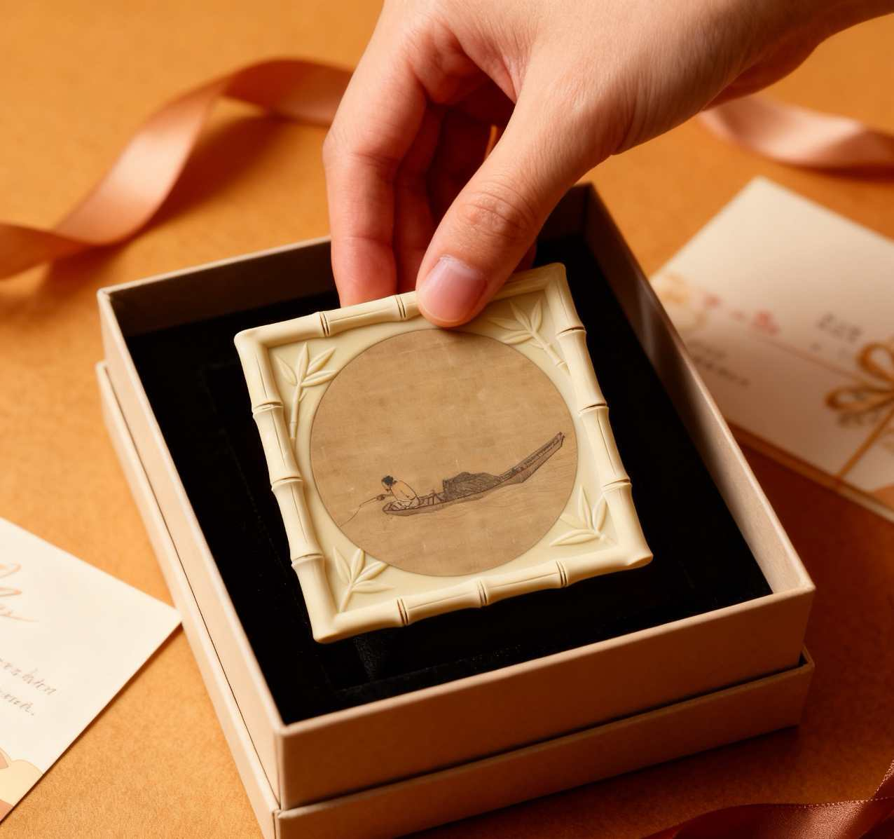

雅物全景 & 定制流程
实物
Product Showcase & Process

实物拍摄
竹韵
竹节框 · 寒江独钓
Bamboo Knot Frame · Fishing Recluse
仿竹节纹理浮雕外框，寓意“高风亮节”。内芯画面取自马远《寒江独钓图》，留白意境深远。 采用环保树脂材料，结合高精度3D打印与UV彩印工艺，还原宋画笔触。
- • 尺寸：80mm x 80mm
- • 材质：PLA+ / 光敏树脂
- • 制作耗时：约 8 分钟
3D 数字化预览
所见即所得的定制体验
更多款式图谱

听琴图·梅子青

瑞鹤图·粉青

西湖图·米黄

千里江山·黛绿

定窑白·莲纹

龙泉青·刻花

早春图·浮雕

听松图·雅意
9步定制 · 立等可取
手机扫描
选择浮雕
选择关键词
画面描述
确认订单
在线付款
自动排产
8分钟取件
包装带走
使用场景

西湖打卡

冰箱装饰

礼品包装